Chapitre 7 : Géométrie dans l'espace
I. Pyramide
1) Définitions
Définition : Une pyramide est un solide dont :
- une face est un polygone : la base
- les autres faces sont des triangles : les faces latérales
- les faces latérales ont un point commun : le sommet de la pyramide
[SH] est la hauteur de la pyramide, elle est perpendiculaire au plan de base et passe par le sommet.
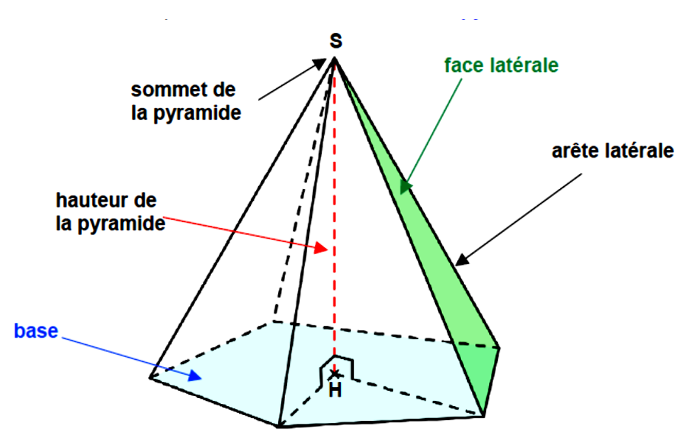
Remarque : Ici, la base est un pentagone (polygone à 5 côtés).
Exemples de pyramides :
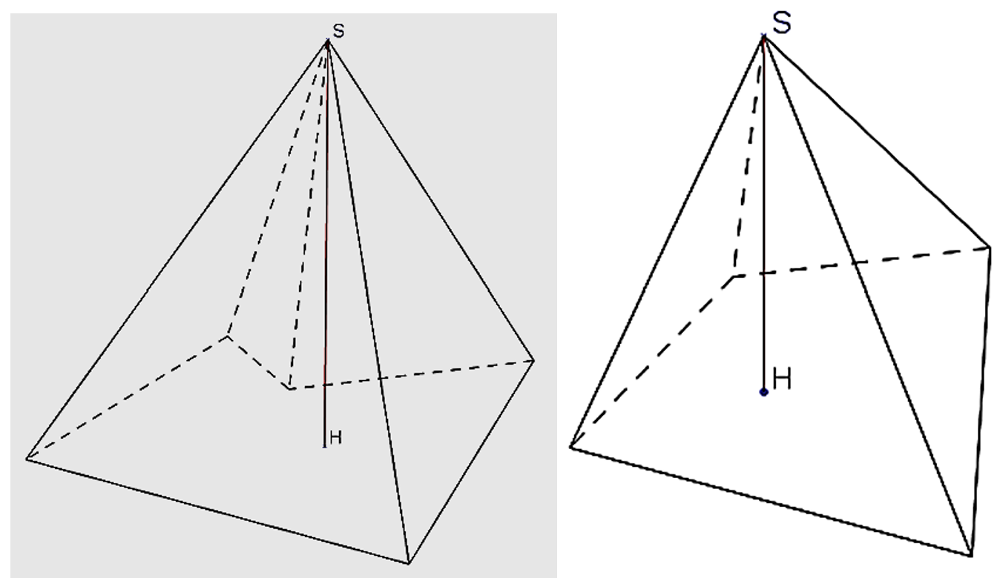
Définition : Une pyramide régulière est une pyramide dont toutes les faces latérales sont des triangles isocèles superposables.
Exemples de pyramides régulières :
|
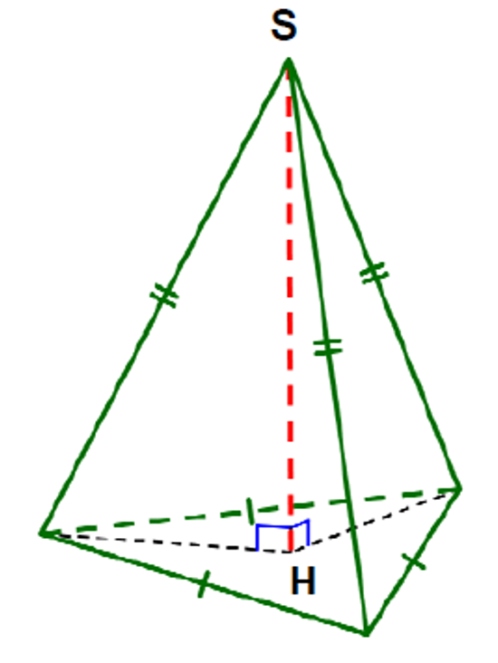 Pyramide régulière à base triangulaire |
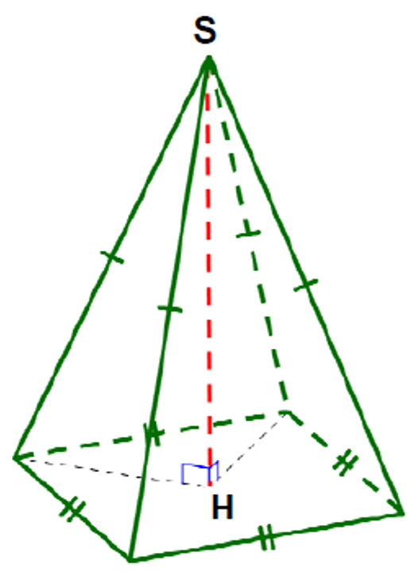 Pyramide régulière à base carrée |
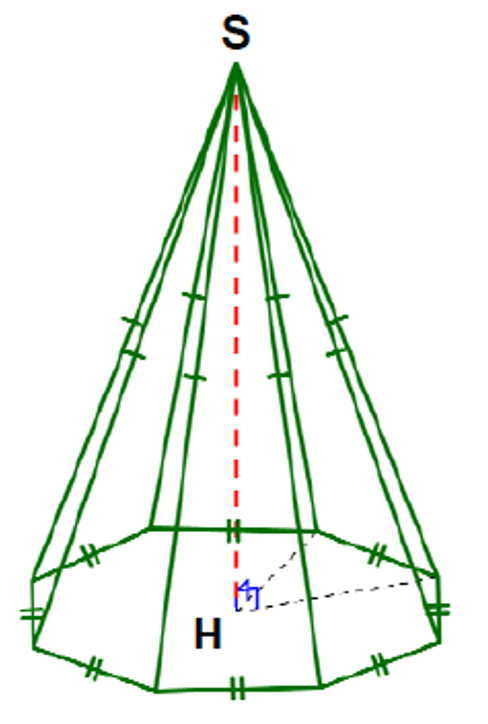 Pyramide régulière à base octogonale |
Remarques : Une pyramide peut avoir sa hauteur confondue avec une arête.
Par exemple, la hauteur de la pyramide SABC peut être son arête [SA].
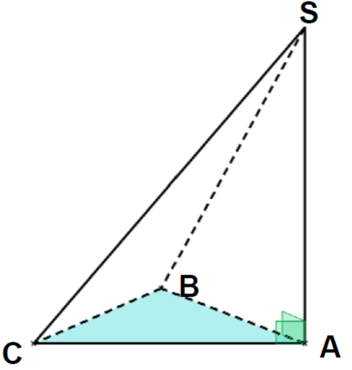
2) Patron d'une pyramide
Un patron d'un solide est un dessin en grandeur réelle qui permet de fabriquer le solide, après découpage et pliage.
Remarque : Il existe plusieurs patrons pour une même pyramide.
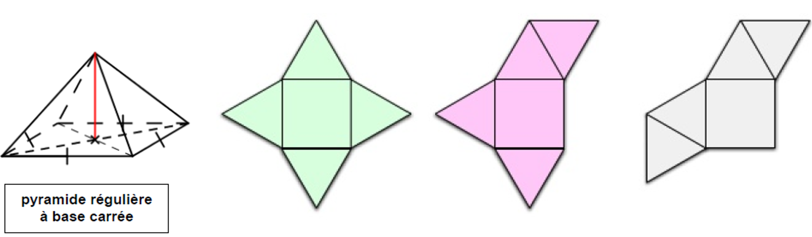
Exemple : Réaliser un patron d'une pyramide à base triangulaire.
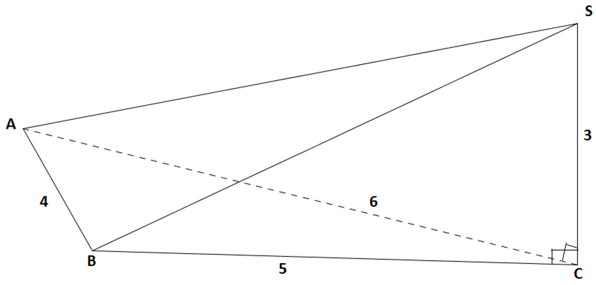
Étant donnée une pyramide SABC avec :
- AB = 5 cm
- AC = 6 cm
- BC = 4 cm
- SA = SB = SC = 3 cm (arêtes latérales)
Le patron se compose :
- De la base : le triangle ABC
- De trois faces latérales : les triangles SAB, SBC et SCA
On peut disposer ces triangles de différentes façons pour obtenir différents patrons possibles.
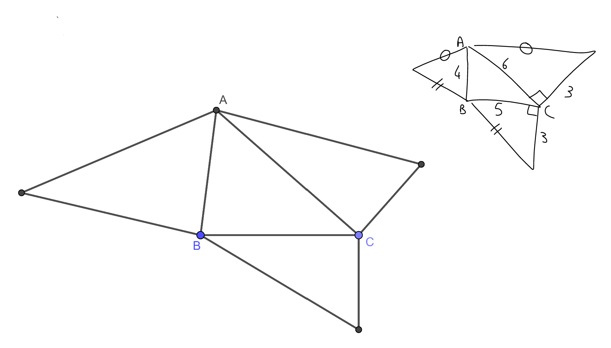
II. Cône de révolution
1) Définitions
Définition : Un cône de révolution est le solide obtenu en faisant tourner un triangle rectangle autour d'un de ses côtés droits. Il est composé :
- d'un disque : la base du cône
- d'une surface courbe appelée face latérale
- d'un point appelé sommet du cône
[SO] est la hauteur du cône, elle est perpendiculaire au plan de base et passe par le sommet.
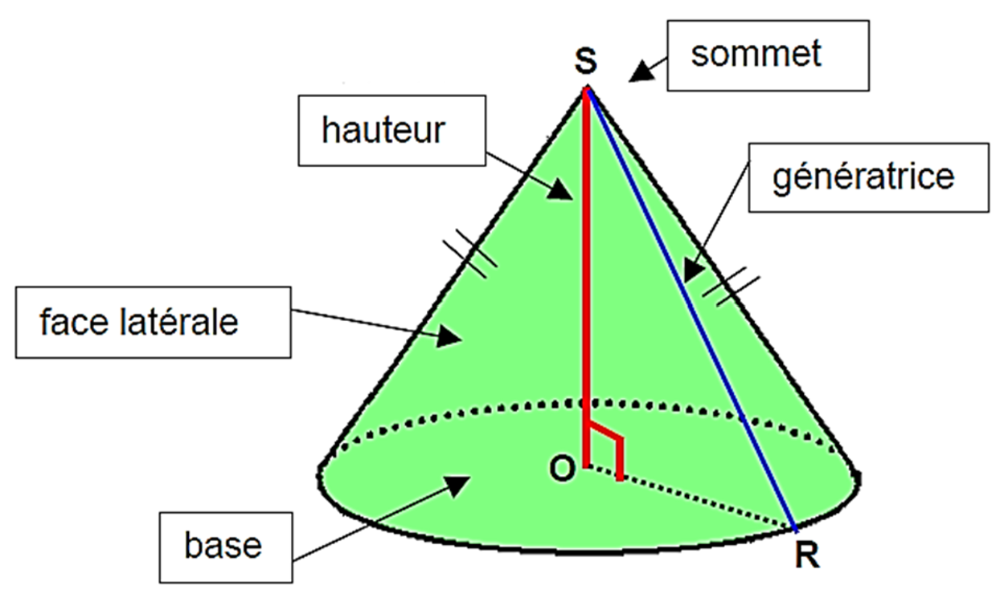
2) Patron d'un cône
Le patron d'un cône de révolution se compose :
- d'un disque (la base)
- d'un secteur circulaire (la surface latérale)
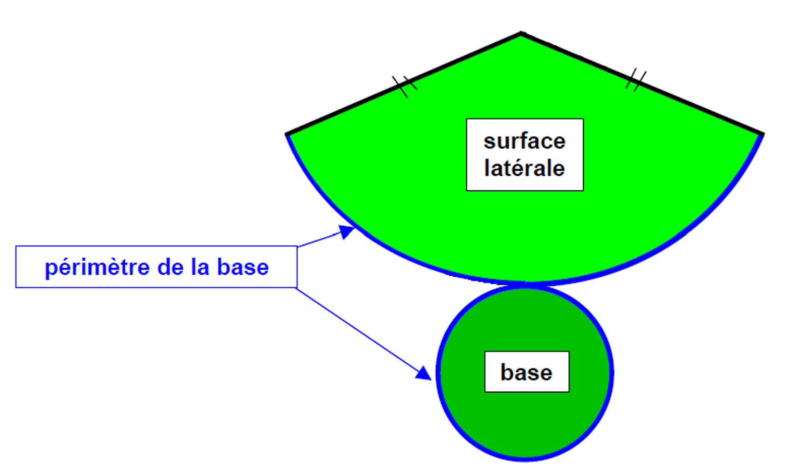
Remarque importante : Le périmètre de la base du cône correspond à la longueur de l'arc du secteur circulaire qui forme la surface latérale.
III. Volumes
Propriété : Le volume d'une pyramide ou d'un cône de révolution est égal au tiers du produit de l'aire de la base du solide par la hauteur du solide.
V = aire de la base × hauteur3
= 13 × aire de la base × hauteur
Exemple 1 : Calculer le volume d'un cône de révolution.
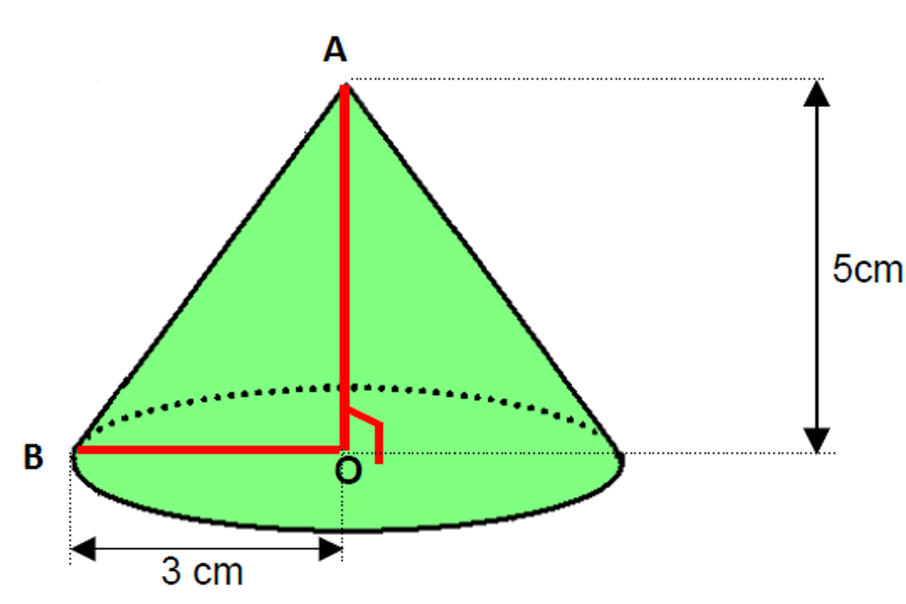
Soit un cône de révolution de hauteur OA = 5 cm et de rayon de base OB = 3 cm.
Calcul du volume :
L'aire de la base est : π × OB²
V = 13 × π × OB² × OA
V = 13 × π × 3² × 5
V = 13 × π × 9 × 5
V = 15π
Le volume du cône est de 15π cm³ (soit environ 47,1 cm³).
Exemple 2 : Calculer le volume d'une pyramide à base carrée.
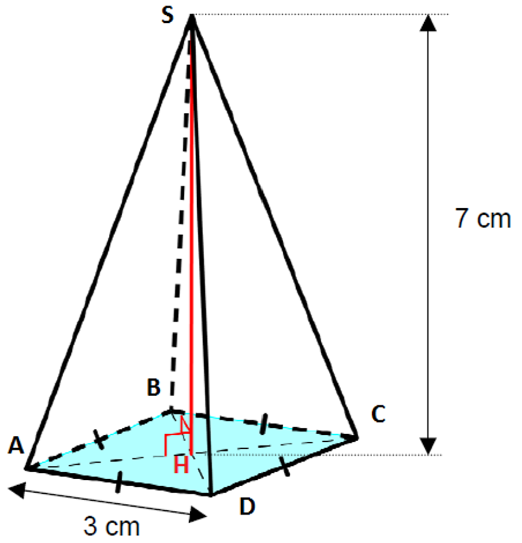
Soit une pyramide SABCD à base carrée de côté AB = 3 cm et de hauteur SH = 7 cm.
Calcul du volume :
L'aire de la base carrée est : AB²
V = 13 × AB² × SH
V = 13 × 3² × 7
V = 13 × 9 × 7
V = 633
V = 21
Le volume de la pyramide est de 21 cm³.
À retenir :
- Pour une pyramide à base carrée de côté c et de hauteur h : V = c² × h3
- Pour un cône de rayon r et de hauteur h : V = π × r² × h3
- Le volume se mesure en unités cubes : cm³, m³, etc.
Méthode pour calculer un volume :
- Identifier la nature de la base (carré, rectangle, triangle, disque...)
- Calculer l'aire de la base
- Repérer la hauteur du solide (perpendiculaire à la base)
- Appliquer la formule : V = 13 × aire de la base × hauteur
- Ne pas oublier l'unité (cm³, m³...)